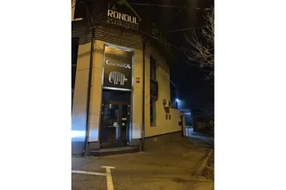
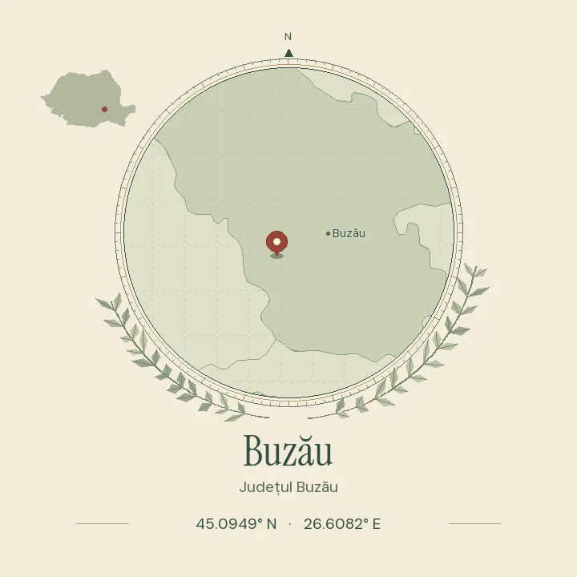
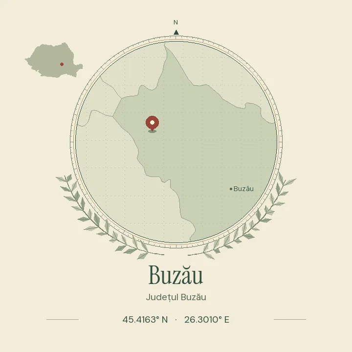
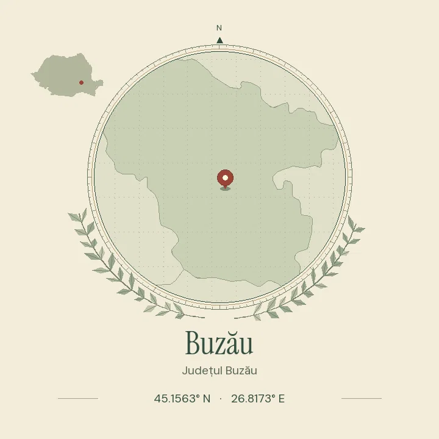
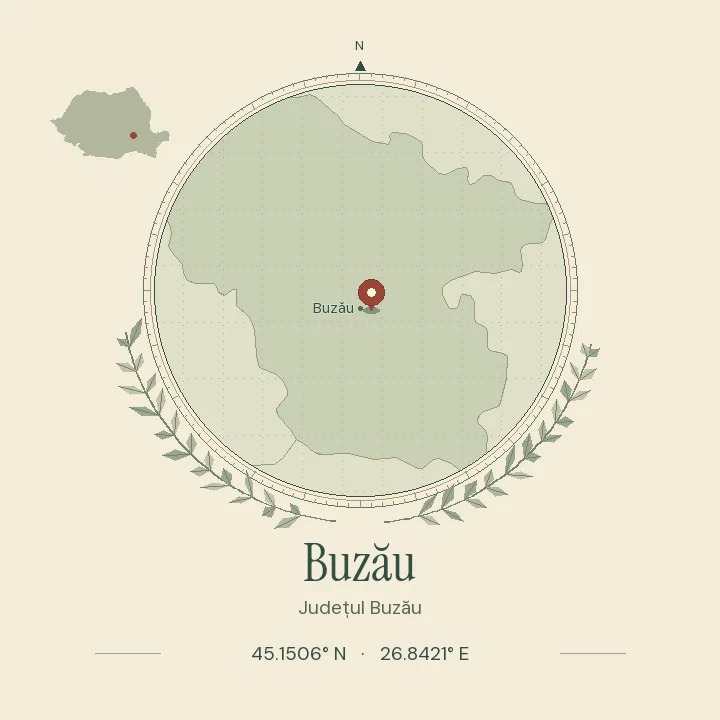
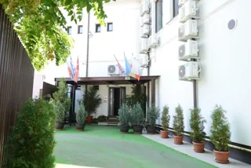
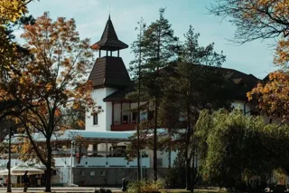
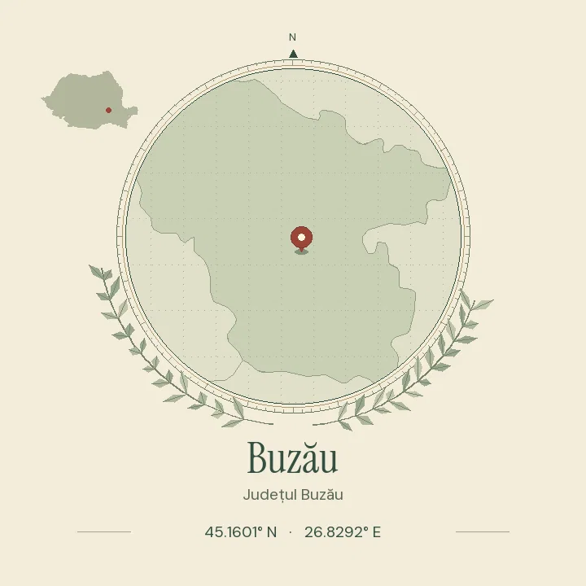

Locații de nuntă în Buzău
- locații în director
- 11
- medie ponderată Google
- 4,3 / 5
- evaluări Google
- 5.839
Cum alegi o locație în Buzău
În Buzău poți începe comparația cu JADE guesthouse (cazare în regim hotelier), Hotel & Restaurant - Freedom & Relax (hotel), Crama Berechet (cramă). Aceste proprietăți apar în primele poziții când luăm în calcul împreună nota și numărul de evaluări Google. Salvează adresele care vă interesează pentru a le așeza apoi alături în fișa de comparare a ofertelor.
În fișele proprietăților poți compara dotări concrete la JADE guesthouse (terasă, cazare, restaurant), Hotel & Restaurant - Freedom & Relax (terasă, cazare, parcare gratuită). Pentru oferta de nuntă, întreabă ce spații și servicii dintre cele prezentate intră în rezervarea privată pentru data voastră.
Pentru invitații care rămân peste noapte, în apropiere de JADE guesthouse apare în evidența turistică și Art din Buzău. Distanța măsurată între repere este de 1,1 km în linie dreaptă. Verifică traseul de întoarcere și rezervă camerele separat dacă oferta locației nu cuprinde cazare.
Dacă vrei să vezi două proprietăți în aceeași zi, poți continua de la Hotel Sport B90 spre Pensiunea Bianka din Mărăcineni. Punctele lor sunt la 1,7 km în linie dreaptă. Deschide traseul înainte să fixezi ora celei de-a doua vizite, mai ales dacă grupul se deplasează cu autocarul.
Locații pentru vizionare
Ordinea ține cont de nota Google și de numărul evaluărilor. Cum calculăm ordinea

Fotografie a locației · Sursa fotografiei Buzău · Cazare în regim hotelier
JADE guesthouse
JADE guesthouse. Un oaspete la JADE vorbește despre un cartier liniștit al Buzăului, o rezervare ușor de făcut și cafea și ceai incluse la cazare.
Strada Martirilor, 120138 Buzău+40 763 174 028
Fotografie a locației · Sursa fotografiei Buzău · Hotel
Hotel & Restaurant - Freedom & Relax
Hotel cu restaurant pe strada Turdei din Buzău, 4,8 din 109 evaluări, gazde foarte lăudate și evenimente la parter. Verifică întâi camerele.
Strada Turdei 8, 120159 Buzău+40 758 158 736
Hartă ilustrată Buzău · Cramă
Crama Berechet
Crama Berechet. Un vizitator al Cramei Berechet a apreciat atmosfera intimă și discuțiile cu oamenii întâlniți acolo, pe lângă vinurile degustate.
Sat Saranga, Strada Zorilor nr. 3, 127470 Buzău
Hartă ilustrată Buzău · Cramă
La Otilia, Otirom Rovinota
La Otilia, numele Otirom Rovinota apare în asociere cu vinurile din Buzău, iar o apreciere publicată de un client se referă strict la acestea.
Bloc 30, după Profi Nehoiu, Calea Mihai Viteazu 43, 125100 Buzău+40 748 322 864
Hartă ilustrată Buzău · Cramă
CRAMA SLĂNIC GRANDE
CRAMA SLĂNIC GRANDE, Buzău. Un client vorbește despre cumpărături în două puncte ale cramei, inclusiv cel de pe Unirii.
Bulevardul Unirii Bl 18, B Parter, 120267 Buzău+40 752 141 617
Hartă ilustrată Buzău · Cramă
Crama Slanic Dorobanti
Crama Slanic Dorobanti, Buzău. Un vizitator scrie că punctul cramei Slănic Dorobanți s-a mutat într-un spațiu mai mare.
Strada Dorobanți 92, 120000 Buzău+40 752 141 617
Fotografie a locației · Sursa fotografiei Buzău · Han
Complex Moara Dragaicilor
Complex Moara Dragaicilor, Buzău. Grădina de vară de la Moara Drăgaicilor este prezentată pentru până la o sută de invitați.
EURO 85 Nr. 1, 127325 Buzău+40 238 717 213
Fotografie a locației · Sursa fotografiei Buzău · Hotel
Corner Center Rental
Hotel în Buzău cu parcare gratuită în curte, 200 de lei pe noapte după un oaspete. Bun pentru cazarea invitaților, dar cu pereți subțiri.
Strada Alexandru Marghiloman 2, 120031 Buzău+40 745 321 255
Fotografie a locației · Sursa fotografiei Buzău · Restaurant cu specific românesc
Conacul Trandafirilor
Conacul Trandafirilor, Buzău. O familie povestește cum a combinat o plimbare prin parcul Crâng cu o masă pe terasa conacului.
Parcul Crâng, 120252 Buzău+40 740 367 829
Hartă ilustrată Buzău · Hotel
Hotel Sport B90
Hotel Sport B90. Din experiența relatată de un organizator de excursii reiese o chestiune importantă pentru nunțile cu multe rude din alte orașe.
Str. Mesteacanului Nr.1, Strada Sporturilor, 120024 Buzău+40 238 720 222
Hartă ilustrată Buzău · Cramă
Boutikue coffe &fine drinks
Boutikue coffe &fine drinks. Categoria de cramă din hartă merită lămurită direct cu administratorul, fiindcă de ea depinde ce îi puteți propune grupului.
Calea Eroilor B16, 120001 Buzău+40 785 457 174
Întrebări despre locațiile din Buzău
Ce proprietăți din Buzău au grădină sau terasă?
JADE guesthouse (terasă); Hotel & Restaurant - Freedom & Relax (terasă); Complex Moara Dragaicilor (grădină, terasă, foișor). Cere administratorului condițiile de folosire pentru o petrecere privată.
Care locație din Buzău are cele mai multe evaluări Google?
Complex Moara Dragaicilor are 4.029 de evaluări în profilul Google folosit la documentare. Evaluările acoperă și alte experiențe la proprietate, inclusiv vizitele fără eveniment.
Ce alte localități pot include într-o vizionare lângă Buzău?
Cele mai apropiate adrese comparate pe hartă sunt în Mărăcineni, Vernești, Săhăteni. Găsești mai jos distanțele dintre proprietățile folosite pentru această comparație.
Vizionări în apropiere
- Mărăcineni · 1 locație. Între Hotel Sport B90 și Pensiunea Bianka sunt 1,7 km în linie dreaptă.
- Vernești · 1 locație. Între JADE guesthouse și Bodega Pietroasa sunt 8,1 km în linie dreaptă.
- Săhăteni · 2 locații. Între Crama Berechet și Domeniile Franco-Române sunt 9,6 km în linie dreaptă.